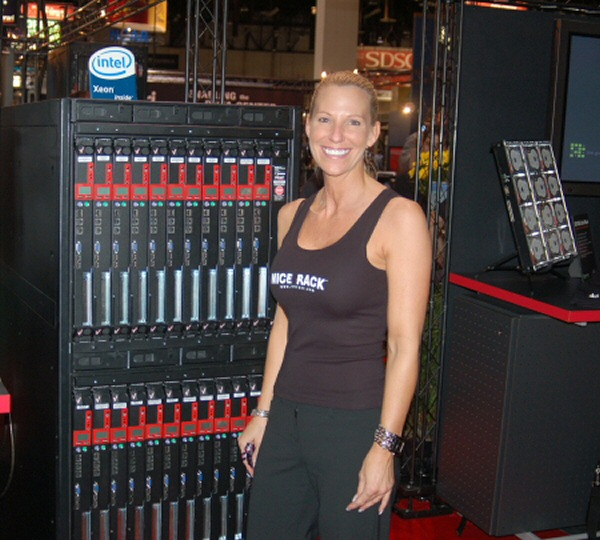

Austin on Rails: Deploying Rails to your own private cloud with OpenNebula and Cobbler
Ethan Waldo
<
ewaldo@healthetechs.com
>
@EthanWaldo
The way things were...
Everybody owned or rented their own hardware

Nah, more like this
Co-located hosting for a premium
Shared hosting for the masses
CPanel anybody?
Copyright
© 2011
Ethan Waldo
, All Rights Reserved.
Why people hated it
Hardware ages
How the fsck was this thing installed 3 years go?
Our business just went under after
THE
server failed
That was maintained by THIS guy
Many places had crap support
Remember OnRamp 10 years ago?
What do you mean it's going to be 4 hours before somebody can get around to hitting the power button on my server?
WHAT DO YOU MEAN NO BACKUP!?!?!?
Fast-forward
People serving assets and other static cached content on Akamai across geographically dispersed regions
Virtualization starts to emerge
Amazon EC2 starts to kick off
Other cloud providers follow
Rails gaining ground and companies can scale horizontally with almost no capital outlay as well has have entire systems geographically dispersed
PROFIT!!!
Present Day
What is the cloud, really?
System Automation
Geographically dispersed systems
What happens when what you want is outside the box?
What do you mean all my servers are only in Chicago? I thought this was the cloud!?!
Yes I would like fries with that but I'm surprised I had to ask you if they were included in the happy meal.
SLA not acceptable
What does the box really get you? Do you even know?
AMD? Opteron or Phenom?
Intel? Xeon or Core i#?
2.0Ghz?
3.0Ghz??
An actual core or a virtual core?
How is my load being shared with others?
SCSI, SATA, SAS, Fibrechannel, Infiniband?
3.0Gbps? 4.0gbps? 6.0Gbps? 8.0Gbps? 20.0Gbps?
5400rpm, 7200rpm, 10k rpm, 15k rpm?
Can I put my #{insert no-SQL data solution here} database on a new-fangled 500Mbps Flash drive X? Stripped?
Total bandwidth? Peak bandwidth?
Net provider redundancy? Net provider load balancing?
Present Day
Where is your data?
Sorry for the outage, but the server you're on just so happened to also serve a terrorist website and the FBI has claimed it for forensic analysis.
Amazon went down again? And my stuff didn't stay operational even though it was in "the cloud"?
Zero-day VT-d vulnerability allows host privilege elevation at ring 0
What is my legal recourse if my IP is stolen? How would I even know it?
Can I form a legal agreement with provider X to ensure my compliance with regulation Y?
Is my website slow because my code sucks or because I'm on a slow #!@$*( system?
Perhaps for most the benefits outweigh the downsides
What's the big deal, didn't we learn our lesson from all the horrible sysops that held our company hostage with their iron fisted control?
I would still need to negotiate contracts, security, and SLA for any co-location provider
Private Cloud
Eucalyptus (http://www.eucalyptus.com)
Not all components open source (i.e. VMWare)
Been around the longest, potentially the most mature
Very deep stack that supports HPC clustering like Rocks Cluster (http://www.rocksclusters.org)
OpenStack (http://openstack.org)
Very immature at the initial outset, command-line only
Good funding, fast development
Keeps changing hands
Used to not be a fully open stack but that has changed recently
Cloud.com (http://www.cloud.com)
Best looking, sysadmin friendly web-UI
Installation unstable
Severe limitations when not using shared storage
Now owned by Citrix :(
OpenNebula (http://www.opennebula.org)
Fully open stack
Good doumentation, but installation and configuration can get complicated depending on needs
Decent web-UI
web-UI written in ruby and jquery-ui
Powerful hook interfaces
Private Cloud
Cobbler (https://fedorahosted.org/cobbler)
Not a private cloud system per-se but can compete
Works great as a supplement to any private cloud
Best open source PXE boot system in existance, EVER
Supports kickstarting
Puppet (http://puppetlabs.com)
Enhances private cloud with application provisioning
Tries to be object oriented in a non-object oriented way and it doesn't work in many cases
On the other hand, it does work
Chef (http://www.opscode.com/chef)
Enhances private cloud with application provisioning
People just like it better than Puppet
Stability issues between releases
UI not payware
Demonstration
Conclusion
Dev Ops no longer to be taken lightly even in smaller organizations
What you need when you're no longer part of the lower common denomenator
Take back control of your computing resources
Automate, obsolete, keep fully functioning running documentation
Overflow as needed
Austin on Rails: Deploying Rails to your own private cloud with OpenNebula and Cobbler
Ethan Waldo
<
ewaldo@healthetechs.com
>
@EthanWaldo